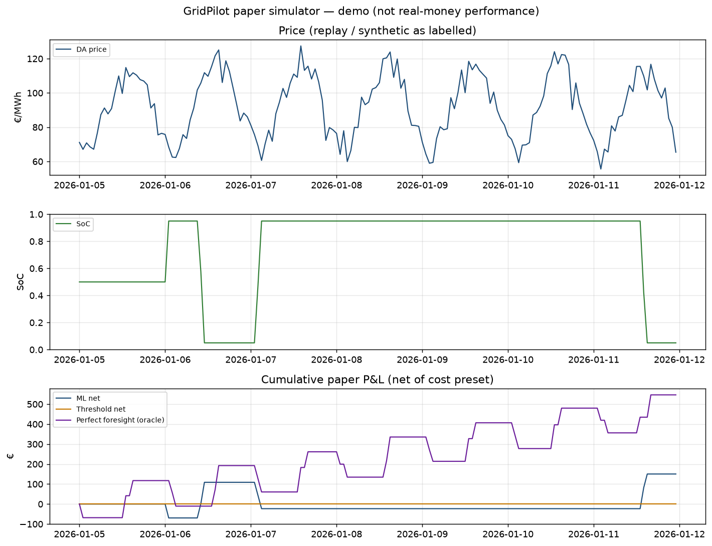

GridPilot paper simulator
Paper trading only. No exchange connectivity, no real orders,
no real-money performance. Day-ahead only. Perfect foresight is an oracle with lookahead;
the agent never sees it.
SYNTHETIC scenario — not Energy-Charts market data.
Scenario: normal (synthetic) — SYNTHETIC quiet winter week (labelled; not Energy-Charts).
Seed 0 · ticks 168 · gate closure 12:00 Europe/Berlin on D-1; no lookahead into delivery-day prices
Paper P&L
| ml gross eur | 181.77 |
|---|
| ml net eur | 150.37 |
|---|
| threshold gross eur | 0.00 |
|---|
| threshold net eur | 0.00 |
|---|
| perfect foresight gross eur | 668.22 |
|---|
| perfect foresight net eur | 546.42 |
|---|
Capture of perfect-foresight net: 27.518258985479815
Kill-switch events: 0.
Dashboard snapshot

Honest limitations
- Paper trading only — no exchange connectivity, no real orders.
- Day-ahead only; no intraday or imbalance (reBAP) simulation.
- Sourced fee preset is ECC DA clearing only; current EPEX trading fee is not in the public price list; degradation is still ASSUMED.
- Perfect foresight is an oracle baseline with lookahead; the agent never sees it.
- These figures are not real-money performance.